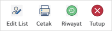

- Setelah Anda masuk ke detail tagihan kolektif non air, di bagian tengah terdapat menu seperti berikut :

- Pilih menu "Edit Daftar" di bagian tengah atas.
- Seleksi pelanggan menggunakan checkbox. Pelanggan yang tidak dicentang tidak akan ditambahkan ke daftar pelanggan kolektif.
- Tekan menu “Tambah pelanggan” untuk menambahkan pelanggan lainnya.
- Tekan menu “Hapus untuk menghapus pelanggan dari daftar tagihan kolektif.
- Tekan tombol "Simpan" jika sudah selesai melakukan edit.